Després d'uns anys treballant sense ànim de lucre, vam adonar-nos que havíem avançat força en el nostre camí. Però, sobretot, vam adonar-nos que encara podíem avançar molt més, que encara no n’hi havia prou, que eren moltes les coses que faltaven i falten per fer, i que són molts els recursos necessaris per fer la nostra tasca.
A poc a poc, amb constància i molta paciència, com es fa a Ruanda, al 2009 vem voler fer un pas més i crear Camins Ong, una associació de cost zero, perquè sabem que està a les nostres mans ajudar a canviar allò que no ens agrada o que ens agradaria que fos d'una altra manera. La raó de ser de Camins Ong és clara i transparent: intentar ajudar a totes aquelles persones que es troben oblidades i atrapades en la seva pròpia misèria, per tal que puguin recuperar la seva dignitat i trobar el seu camí.
En nom de tots els que formem aquesta associació volem donar-vos les GRÀCIES amb majúscules per la vostra confiança; per creure, com creiem nosaltres, que a poc a poc podem canviar el món. Són moltes les il·lusions que cal complir i molts els somnis que esperem que algun dia es facin realitat.
Camins ONG
Projectes
RWANDA

Menjador Escolar de Ruli
Més InformacióMenjador Escolar de Ruli
L’escola de Ruli es va inaugurar el 1980. Al 2009, moment en què començarem el projecte, l'escola tenia 800 alumnes de primària i secundària d’entre 5 i 15 anys i hi treballen 20 professors. A l'escola estudiaven la majoria dels nens i nenes del poble de Ruli i dels pobles del voltant. És finançada pel govern rwandés i no disposa de menjador escolar i, per tant, tots els nens tornen a casa seva a dinar. Entre tots aquests alumnes, el Centre Nutricional de la missió va detectar que n'hi havia uns 40 que necessitaven accés urgent i regular a aliments variats i frescos per a un correcte creixament i que les seves famílies no tenien possibilitats de donar-ni. Per això s’engegà el projecte de menjador escolar que dóna esmorzar i dinar a 40 nens diàriament de dilluns a divendres.
RWANDA

Menjador Social de Ruli
Més Informació
Granja-Vivenda
Més InformacióGranja-Vivenda
Construcció d’una granja-habitatge per a cinc noies orfes, una d’elles amb estudis de veterinària, al poblat de Ruli (Rwanda). Els productes obtinguts aniran destinats al menjador escolar i al menjador social, i es té previst que els excedents intentin comercialitzar-se per aconseguir que la granja sigui econòmicament autosuficient.
RWANDA

Taller de confecció de Kagugu
Més InformacióTaller de confecció de Kagugu
Una de les missioneres espanyoles que viu a la capital Kigali ens demanà ajuda per comprar 15 màquines de cosir. El seu objectiu era muntar un taller per donar feina a noies joves de la ciutat i treure-les de la prostitució. Inicialment vàrem destinar-hi 1.000€ per adquirir les màquines, i posteriorment les hem ajudat, primer en formar a les noies, i després a donar sortida al que s'ha anat fabricant. Amb la distribució del material que produeixen s'aconsegueixen dos objectius: i) pagar-lis un sou i dotar-les d'uns recursos, i ii) obtenir un marge que permeti obtenir un finançament adicional per a altres projectes.
RWANDA
Taller manualitats de Ruli
Més InformacióTaller manualitats de Ruli
Dintre de les instal·lacions de Ruli hi havia un taller de manualitats format per 25 mares de familia, les quals treballaven d’allò més bé la fulla de plàtan seca. Aquesta feina significava la base de la manutenció de les seves famílies. Durant l’any 2009 els hi vam comprar material pel valor de 4.700€. Actualment el taller està parat per manca de demanda de material.
RWANDA

Mossèn Cabayol
Més InformacióMossèn Cabayol
En un paratge fantàstic del nord de Rwanda anomenat Campanga, fa molts anys que hi treballa el missioner Mossèn Cabayol. Home ja gran, prim, però amb una energia sense fi, ha estat capaç de construir milers de petites cases amb base de pedra per evitar els efectes de l’aigua. També ha engegat una cooperativa amb els camperols de la demarcació i amb els fons que li arriben per les vies més inversemblants, reparteix grans quantitats de menjar, sobretot entre els pigmeus, que és la comunitat més pobre de la zona. El mossèn és una persona que inspira tota la confiança possible, i per això l'ajudem sempre que ens és possible.
RWANDA
Professors Kagugu
Més InformacióProfessors Kagugu
Kagugu és un barri de Kigali amb molta población marginal. Un dels grups més desatesos és el de les adolescents sense estudis ni professió. Les germanes Dominiques de l’Anunciata tenen una casa en aquest barri i busquen la manera de donar alguna perspectiva de futur a aquestes noies donant cursos de forma anual en l'espai de què disposen. L’edifici, a banda d’una escola infantil, compta amb diferents espais que estan a disposició de la gent del barri. Els principals tallers que Camins financia i que es fan en aquestes sales són:
- Taller de costura. A part del fet que es dóna feina i, per tant, un sou, a la professora de costura, moltes noies ja s’han beneficiat del taller. El principal objectiu és que aprenguin un ofici que els permeti trobar feina i poder subsistir pel seu compte, mitigant, així, el risc d’exclusió social que pateixen. Les possibilitats de trobar feina de costura són petites, però algunes se’n surten: bé treballant per una altra cosidora, bé treballant al taller de confecció.
- Alfabetització. Els mateixos grups reben clases d’alfabetització; les possibilitats de trobar feina augmenten molt, a banda de l’avenç que representa per al bon desenvolupament de la seva vida diària.
RWANDA

Monges de Cyanica
Més InformacióMonges de Cyanica
A la majoria de viatges que fem a Rwanda visitem la població de Cyanica, on es troben unes monges rwandeses de la congregació “Amics dels pobres”. Ja en el primer viatge vam adonar-nos de l’escassetat de recursos de què disposen, tant elles com la gent de la zona. En la mesura del possible, des de Camins ONG hi col·laborem econòmicament perquè siguin elles, que coneixen més en detall les necessitats de la zona, les que distribueixin l'ajuda entre la gent del seu poblat.
RWANDA

Reparació ambulància
Més InformacióReparació ambulància
L’hospital de Ruli a Rwanda es troba en una zona muntanyosa a uns 60 quilòmetres de la capital, Kigali. Els camins per arribar-hi estan sempre molt malmesos i per això el desgast de l’ambulància 4x4 és molt alt. Al 2009 les missioneres de Ruli ens comunicaren que s’havia de canviar una peça trencada que inutilizava l’automòbil. Varem assumir la reparació per permetre que es seguís amb el servei de trasllat en els casos d'urgència.
RWANDA
Robes, Sabó i Espelmes
Més InformacióRobes, Sabó i Espelmes
Amb els anys d’anar-hi hem observat que per a la gent de fora de Ruli, com els camperols que viuen en cabanyes diminutes, les coses simples, però de primera necessitat per ells, com ara el sabó, les espelmes i les robes grosses i florejades per les dones, són molt ben rebudes. En un dels viatges vam destinar-hi 1.000€ per comprar-ne una bona quantitat allà mateix, i repartir-ho entre els més necessitats.
RWANDA

Compressor Clínica Dental. Hospital de Ruli.
Més InformacióCompressor Clínica Dental. Hospital de Ruli.
Finançament del compressor per la clínica dental. Aquest compressor permet el funcionament del material rotatori del silló dental (per fer les obturacions) i també permet el funcionament de l’aparell d’ultrasons (per fer les netejes bucals).
RWANDA
CAMEROUN

Hospital de Djunang
Més InformacióHospital de Djunang
La primera fase de l’hospital de Djunang a Bafoussam fou construida per una fundació japonesa, i posteriorment amb l’ajut d’altres organitzacions s’han anat fent noves àrees d’hospitalització, bloc operatori, sales de consultes i maternitat. Posterioment, per un bon funcionament de totes les instal.lacions ja realitzades, fou necessària la construcción de dues rampes: una a l’entrada des del carrer i l’altre per arribar al segon pis de l’hospital, que és on hi ha el bloc operatori. Ens semblà oportú invertir-hi 2.500€ per fer-les.
CAMEROUN

Curs i màquines de cosir
Més InformacióCurs i màquines de cosir
Ens arribà una carta des del Camerún que ens explicà la trista historia d’un noi que es diu Jean. Ja de molt petit es queda orfe i al carrer, on va ser recollit per una familia nombrosa. De jove intentà fer realitat el seu somni: ser modista. Des de Camins ONG assumim la quantitat de 450€ que és el cost d’un curs de costura durant un any i la compra d’una màquina de cosir per poder tirar endavant fent el que més li agrada.
CAMEROUN
COST ZERO
Camins ONG és una associació que la seva estructura té un cost zero.Què volem dir amb això? Tot allò que la nostra associació obté per tirar endavant els projectes, es destina exclusivament a aquests.
Per tant, si necessitem un tampó amb el logotip i el NIF, busquem una empresa especialitzada que ens el faci gratuïtament, o que algú ens pagui el cost d’aquest tampó. Si necessitem material d’oficina, també busquem una empresa o algú que ens el subvencioni. Les nostres reunions es realitzen en espais cedits per entitats públiques o privades, y no suposen cap cost. Així mateix, negociem amb les entitats financeres les millors condicions possibles per pagar les mínimes comisions en, per exemple, les remeses dels amics de Camins ONG. En aquest cas, les comissions que acabem pagant són 100% assumides pels socis col·laboradors, que les paguen de la seva butxaca.
Tampoc hi ha cap persona que obtingui cap tipus de contraprestació pel seu treball dintre de l'associació, ni en el cas dels viatges que realitzem a Rwanda o Cameroun. Les persones que viatgen assumeixen personalment totes les despeses del viatge. D’aquesta manera aconseguim que tots els diners recollits siguin exclusivament destinats als projectes de l’associació.
Per aquesta raó haureu comprovat que us podreu comunicar amb l’associació a través de l’e-mail per tal d’estalviar costos telefònics o de correu ordinari.
PRINCIPALS PARTIDES ECONÒMIQUES
Avui ja portem més de cinc anys de projectes des del 2009. Uns són continus, i cada any hi destinem un import. Altres són puntuals, i van canviant d'un any a l'altre. Però durant aquestsanys, gràcies a les diferents vies d'obtenció de recursos, hem participat en molts projectes a Rwanda i Cameroun, projectes que sense els recursos necessaris, no s'haguessin pogut portar a terme.Per això volem exposar, de forma resumida, quins són les principals partides destinades a projectes, i com s'han generat aquests recursos, de forma acumulada desde 2009 i fins març de 2014 (data més recent sobre la que tenim les dades agregades):
| Projectes | |
| Menjador escolar i social Ruli | 44.850 euros (2009-2014) |
| Granja-vivenda | 15.520 euros (2011-2012) |
| Compra de material (I) | 13.607 euros (2009-2014) |
| Professors Kagugu | 7.498 euros (2011-2014) |
| Material mèdic Cameroun | 4.558 euros (2009 i 2011) |
| Cases Mossen Cabayol | 1.640 euros (2009 i 2011) |
| Altres projectes | 6.580 euros |
| Total projectes 2009-2014 | 94.253 euros |
| Recursos | |
| Amics Camins (socis) | 31.009 euros (2010-2014) |
| Venda de material | 25.610 euros (2009-2014) |
| Donatius puntuals | 24.026 euros (2009-2014) |
| Sopar espectacle Can Fabes | 13.178 euros (2011) |
| Loteria (II) | 7.365 euros (2010-2013) |
| Guardioles viatgeres | 3.140 (2013-2014) |
| Sopar espectacle Cantonigròs | 692 euros (2013) |
| Altres | 2.337 euros |
| Total finançament 2009-2014 | 107.357 euros |
Al 31 de març de 2014 disposem d'uns fons d'uns 13 mil euros que, juntament amb els nous recursos que aconseguim, han de servir per seguir portant a terme projectes pel futur.
(I) Correspon, bàsicament, a la compra de material elaborat al taller de confecció de Kagugu i al taller de manualitats de Ruli. Es considera un projecte, donat que amb aquesta compra de material es dóna feina a un nombre important de dones en risc d'exclosió.
(II) Inclou el premi de 4 euros per euro apostat obtingut en el sorteig de La Grossa de 2012, d'aquelles persones que van decidir no cobrar l'import del premi, i cedir-ho a Camins ONG.
AMICS DE CAMINS
Per només 1 € al mes pots ajudar-nos a dur a terme els projectes pels que estem treballan a l'Àfrica.
Formulari per donar-te d'alta com Amic de Camins:
O bé podeu fer-ho utilitzant el formulari en PDF (Versió en Català - Versión en Castellano) i enviar-lo aquesta adreça electrònica: amics@caminsong.org
(Si teniu problemes per obrir o enviar el formulari, podeu descarregar AQUÍ gratuïtament la darrera versió del programari)
COL·LABORADORS
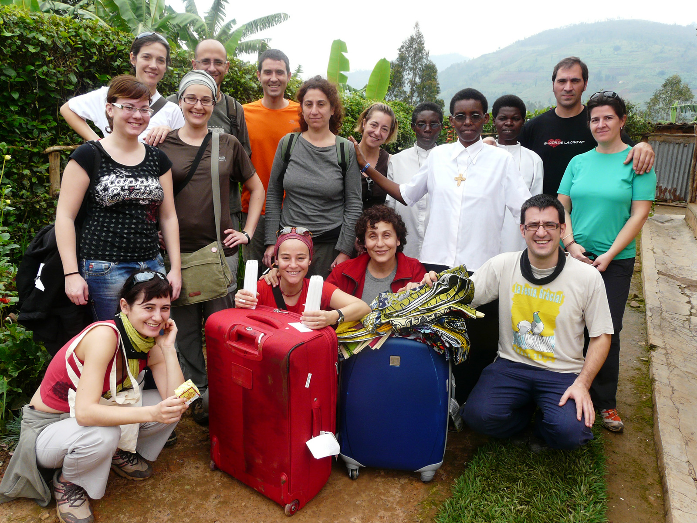

AGRAÏMENTS
| 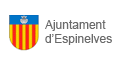 |

|
 |
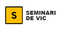 |

|

|

|
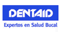 |  |
|
| 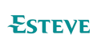 | 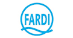 |

|

|
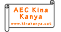 |
| 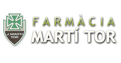 |

|

|
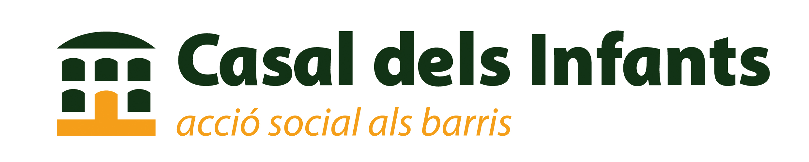 |

|

|

|

|
||

|

|

|
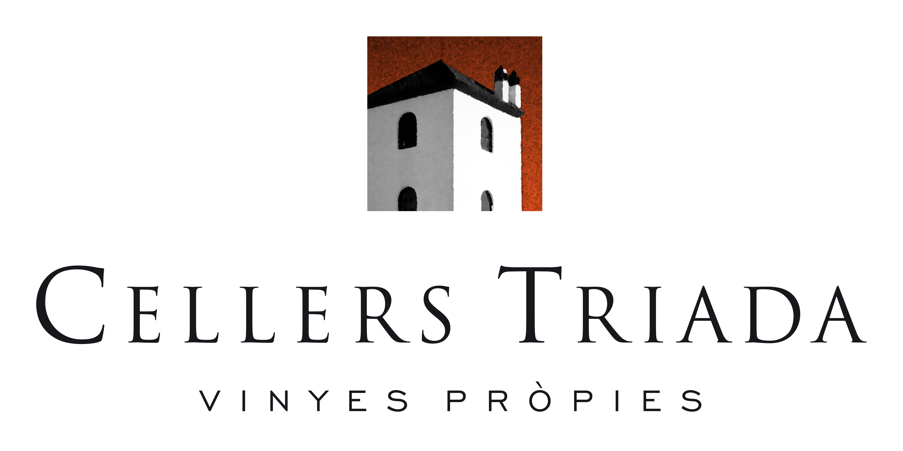 | 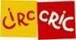 |
| 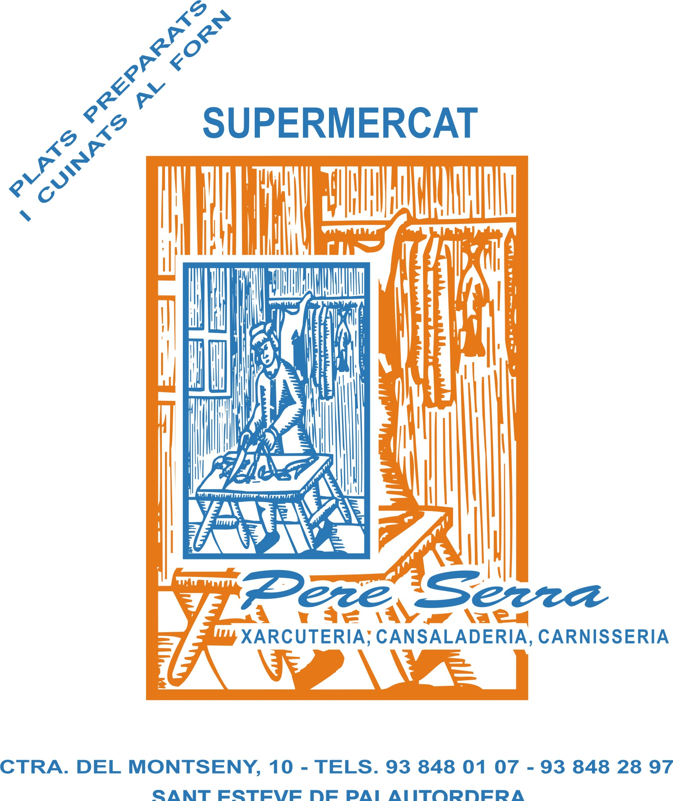 |

|

|
|
|
|
|
||||
|
|
|
|
|
|
CONTACTAR

© 2013 Camins ONG